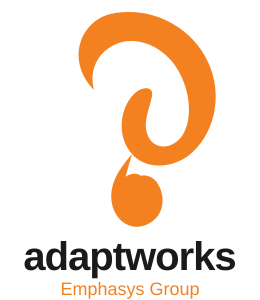

Analise cada atividade com base na maturidade descrita e selecione a pontuação correspondente.
Consulte os critérios abaixo para identificar, avaliar e selecionar o nível de maturidade mais adequado à realidade atual da sua equipe em cada atividade — sendo 1 = Inicial e 5 = Excelência em Engenharia.
| Nível | Nome | Descrição |
|---|---|---|
| 1 | Inicial | Processos ad hoc, sem padronização. Execução manual e dependente de indivíduos. |
| 2 | Fundação Técnica | Práticas básicas estabelecidas. Automação parcial com alguma consistência. |
| 3 | Abordagem Consistente | Processos documentados e seguidos pela maioria. Métricas básicas coletadas. |
| 4 | Alta Eficiência Operacional | Automação abrangente, feedback rápido e melhoria contínua ativa. |
| 5 | Excelência em Engenharia | Práticas otimizadas, experimentação contínua e referência organizacional. |
Em caso de dúvida, avalie o nível mais baixo que se aplica. Marque a pontuação que melhor reflete a situação atual, não a desejada.
Cada coluna está organizada em quatro áreas-chave:
Gráfico atualizado automaticamente conforme as pontuações
| Aspecto | Atividade | Complemento | Critérios | Pontuação | Comentários |
|---|---|---|---|---|---|
| Continuous Integration | |||||
|
Continuous Integration (Utiliza e melhora aceleração, preparação e implementação) |
Develop
Transformar funcionalidades em produtos de software rapidamente
|
Avaliar a capacidade da equipe de definir e implementar Pipelines de forma rápida e confiável, adotando as melhores práticas e integrando os padrões de qualidade ao longo das etapas do processo. |
1 – Inicial: O time não utiliza um pipeline estruturado; deploys são manuais. Não há controle de versão ou ramificação padronizado. Membros dependem de configurações locais. 2 – Fundação Técnica: Repositório de código compartilhado existe. Pipelines básicos de CI foram criados, com build e alguns testes automatizados. Ramificação (branching) parcialmente padronizada. 3 – Abordagem Consistente: Pipelines de CI executados a cada commit. Revisões de código (code review) são práticas estabelecidas. Cobertura de testes é medida e acompanhada. 4 – Alta Eficiência Operacional: Feature flags e trunk-based development adotados. Lead time de commit para produção menor que 1 hora. Análise estática de código integrada ao pipeline. 5 – Excelência em Engenharia: Pipeline totalmente otimizado com feedback em minutos. Experimentação contínua e métricas avançadas de fluxo são usadas para melhoria. Referência interna de práticas. |
||
|
Build
Integrar continuamente com frequência e manter estabilidade técnica
|
Avaliar a capacidade da equipe de manter o sistema continuamente integrado e em condições estáveis de produção, garantindo a execução de testes unitários e outras validações a cada integração de código para prevenção de problemas. |
1 – Inicial: Integrações ocorrem raramente, causando conflitos frequentes. Build é executado manualmente por um único responsável. Falhas de build não são tratadas com prioridade. 2 – Fundação Técnica: Compilações automatizadas por pelo menos um pipeline. Testes básicos (unitários) são executados. Taxas de sucesso de build são monitoradas informalmente. 3 – Abordagem Consistente: Todos os commits disparam build automático. Política de "build verde primeiro" amplamente adotada. Testes unitários e de integração cobrindo módulos principais. 4 – Alta Eficiência Operacional: Build em menos de 10 minutos. Feedback imediato ao desenvolvedor em caso de falha. Cobertura de testes acima de 80%. Artefatos versionados e imutáveis. 5 – Excelência em Engenharia: Build otimizado com paralelização e caching. Zero tolerância a builds quebrados. Pipelines de múltiplos estágios com validação completa. Melhoria contínua dos tempos de build. |
|||
|
Test End-to-End
Validar funcionalidades em ambientes semelhantes à produção
|
Ajudar a eficiência da sua equipe em testar condições, de ponta a ponta em ambientes semelhantes aos de produção. Inclui testes funcionais, testes de integração, testes de aceitação e de regressão — e o tempo de recuperação quando falhas ocorrem. |
1 – Inicial: Testes E2E manuais, esporádicos e sem cobertura sistematizada. Ambientes de teste divergem significativamente de produção. Bugs são encontrados principalmente em produção. 2 – Fundação Técnica: Ambiente de homologação disponível. Testes E2E parcialmente automatizados para fluxos críticos. Execução de testes antes de cada release. 3 – Abordagem Consistente: Ambientes paritários (parity) com produção. Suíte de testes E2E automatizada cobrindo cenários principais. Resultado dos testes é gate para promoção entre ambientes. 4 – Alta Eficiência Operacional: Testes E2E integrados ao pipeline de CI/CD. Execução paralela reduz tempo total. Dados de teste sintéticos gerenciados. Testes de contrato (contract testing) em uso. 5 – Excelência em Engenharia: Pirâmide de testes otimizada com E2E focados em fluxos críticos. Shift-left testing consolidado. Ambiente efêmero por PR. Qualidade como responsabilidade de toda a equipe. |
|||
|
Stage
Disponibilizar versão funcional anterior à produção
|
O Stage (pré-produção) é o ambiente mais próximo do real, a fim que os candidatos a Engenharia / Homologação e conformidades de produção para avaliação antes da implementação em produção. |
1 – Inicial: Não há ambiente de staging. Validações finais ocorrem diretamente em produção ou em ambiente muito diferente do real. 2 – Fundação Técnica: Ambiente de staging existe, mas com configurações divergentes de produção. Promoção de artefatos feita manualmente com etapas não documentadas. 3 – Abordagem Consistente: Staging é paridade com produção para componentes principais. Processo de promoção documentado e seguido. Testes de aceitação executados sistematicamente neste ambiente. 4 – Alta Eficiência Operacional: Ambiente provisionado via IaC, idêntico à produção. Promoção automática via pipeline após aprovação dos testes. Dados de staging anonimizados a partir de produção. 5 – Excelência em Engenharia: Staging totalmente automatizado com validações de segurança, performance e compliance. Blue/green ou canary releases testados em staging antes de produção. |
|||
|
Confiabilidade da Integração
Continuação e integração de ciclos de melhoria no fluxo
|
Validar, monitorar e identificar anomalias de métricas no fluxo contínuo de integração, garantindo visibilidade sobre o estado real do pipeline e a saúde técnica do produto. |
1 – Inicial: Sem métricas de confiabilidade do pipeline. Falhas de integração são descobertas tardiamente. Não há rastreabilidade entre commits e deploys. 2 – Fundação Técnica: Taxa de sucesso de build e tempo de ciclo começam a ser coletados. Alertas básicos de falha existem. Revisões informais de pipeline ocorrem ocasionalmente. 3 – Abordagem Consistente: DORA metrics básicas (deployment frequency, lead time) são medidas. Dashboard de CI disponível para a equipe. Retrospectivas incluem revisão de métricas de pipeline. 4 – Alta Eficiência Operacional: Todas as DORA metrics rastreadas. SLOs para o pipeline definidos e monitorados. Análise de causa raiz estruturada para falhas recorrentes. Trend analysis ativo. 5 – Excelência em Engenharia: Métricas preditivas e alertas proativos. Melhoria contínua do pipeline orientada por dados. Benchmarking interno e externo das métricas de fluxo. |
|||
| Continuous Deployment | |||||
|
Continuous Deployment (Implementar implantação segura e frequente) |
Deploy
Implantar em produção com segurança e frequência
|
A implantação contínua deve ser realizada de forma confiável e frequente. Avaliar a capacidade de entregar valor ao usuário final com velocidade, segurança e rastreabilidade completa de cada deploy realizado. |
1 – Inicial: Deploys manuais, raros e de alto risco. Janelas de manutenção longas necessárias. Rollback manual e sem procedimento documentado. Equipe teme o processo de deploy. 2 – Fundação Técnica: Scripts de deploy básicos existem. Deploys ocorrem mensalmente ou por sprint. Checklist de deploy documentado. Rollback possível, mas manual e demorado. 3 – Abordagem Consistente: Pipeline de deploy automatizado para produção. Deploys semanais ou mais frequentes. Aprovações formais integradas ao pipeline. Rollback automatizado disponível. 4 – Alta Eficiência Operacional: Deploy sob demanda com aprovação one-click ou totalmente automatizado. Múltiplos deploys por semana. Blue/green ou canary deployments em uso. MTTR baixo. 5 – Excelência em Engenharia: Deploy contínuo (CD) com validação automática pós-deploy. Múltiplos deploys por dia. Zero-downtime garantido. Experimentação em produção com feature flags avançados. |
||
|
Verify
Confirmar que o ambiente em produção corresponde ao planejado
|
Confirmar que o ambiente após o deploy está funcionando conforme o esperado, com todas as configurações, integrações e dependências corretas, e que os critérios de aceitação técnicos foram atendidos. |
1 – Inicial: Verificação pós-deploy manual e inconsistente. Problemas descobertos pelos usuários. Sem testes de fumaça (smoke tests) estruturados. Alta taxa de rollback emergencial. 2 – Fundação Técnica: Smoke tests manuais executados após deploy. Checklist de verificação documentado. Monitoramento básico de disponibilidade ativo. 3 – Abordagem Consistente: Smoke tests automatizados pós-deploy. Healthchecks de endpoints críticos monitorados. Alertas configurados para anomalias imediatamente após deploy. 4 – Alta Eficiência Operacional: Suite completa de testes de verificação automática pós-deploy. Comparação automática de métricas pré e pós deploy. Gate automático de rollback se métricas degradam. 5 – Excelência em Engenharia: Verificação inteligente com análise de anomalias baseada em ML. Progressive delivery com validação contínua. Confiança total na automação de verificação. |
|||
|
Monitor
Antecipar e corrigir problemas em produção continuamente
|
Antecipar os comportamentos inadequados nos lotes e transações completas de seu produto, tratando as não conformidades de forma eficaz. Manter a visibilidade da saúde do sistema e identificar degradações antes que impactem os usuários. |
1 – Inicial: Monitoramento ausente ou limitado a checks de disponibilidade. Incidentes descobertos por usuários. Sem logs estruturados ou centralizados. Alertas manuais ou inexistentes. 2 – Fundação Técnica: Monitoramento básico de infraestrutura (CPU, memória, disco). Logs centralizados para os principais serviços. Alertas para disponibilidade configurados. On-call informal definido. 3 – Abordagem Consistente: Métricas de aplicação (latência, taxa de erros, throughput) monitoradas. Dashboards por serviço disponíveis. Alertas baseados em SLOs. On-call formal com runbooks. 4 – Alta Eficiência Operacional: Observabilidade completa (métricas, logs, traces correlacionados). SLOs e SLAs definidos e monitorados. MTTR menor que 30 minutos. Detecção proativa de anomalias. 5 – Excelência em Engenharia: AIOps e detecção preditiva de falhas. Correlação automática de incidentes. Error budgets gerenciados ativamente. Cultura de SRE estabelecida com revisões de confiabilidade periódicas. |
|||
|
Respond
Responder a incidentes e problemas de segurança
|
Responder a incidentes, situações críticas e problemas de segurança de forma estruturada, minimizando o impacto ao usuário e garantindo aprendizado organizacional a cada ocorrência. |
1 – Inicial: Resposta a incidentes reativa e desorganizada. Sem processo formal de gestão de incidentes. Comunicação inconsistente durante crises. Pós-mortem inexistente. 2 – Fundação Técnica: Processo básico de incident management documentado. Responsáveis por on-call definidos. Comunicação de status básica para stakeholders. Pós-mortem realizado para incidentes maiores. 3 – Abordagem Consistente: Severidade de incidentes categorizada (P1–P4). SLAs de resposta por severidade definidos. Status page pública ou interna ativa. Pós-mortem blameless para todos os P1/P2. 4 – Alta Eficiência Operacional: Runbooks automatizados para incidentes comuns. MTTR significativamente reduzido. Análise de causa raiz integrada ao backlog de melhoria. Simulações de incidentes (game days) regulares. 5 – Excelência em Engenharia: Auto-remediação para classes de incidentes conhecidos. Chaos engineering para validar resiliência. Cultura de aprendizado organizacional a partir de incidentes. Compartilhamento público de aprendizados. |
|||
|
Observability
Incorporar e medir utilidades e identificar observabilidade
|
Incorporar e medir as utilidades e identificar utilidades de observabilidade para garantir visibilidade completa do comportamento do sistema em produção, permitindo diagnóstico rápido de qualquer problema. |
1 – Inicial: Sem instrumentação de observabilidade. Diagnóstico de problemas depende de acesso direto ao servidor. Logs não estruturados e difíceis de pesquisar. Sem tracing distribuído. 2 – Fundação Técnica: Logs centralizados e pesquisáveis. Métricas básicas de sistema coletadas. Algum tracing manual implementado. Ferramentas de APM básicas em uso. 3 – Abordagem Consistente: Os três pilares (logs, métricas, traces) implementados. Correlação entre os pilares possível via trace ID. Dashboards de serviço padronizados. SLIs instrumentados no código. 4 – Alta Eficiência Operacional: Observabilidade como código (IaC para instrumentação). Tracing distribuído cobrindo toda a cadeia de chamadas. Profiling contínuo em produção. Alertas baseados em sintomas, não causas. 5 – Excelência em Engenharia: Observabilidade nativa ao desenvolvimento (shift-left observability). Real User Monitoring (RUM) integrado. Análise de negócio derivada de dados de observabilidade. Otimização contínua baseada em insights. |
|||
| Release on Demand | |||||
|
Release on Demand (Disponibilizar funcionalidades em fluxo contínuo) |
Release
Disponibilizar funcionalidades em produção em fluxo contínuo
|
A gestão assegura que os produtos são disponibilizados para as partes interessadas de maneira controlada, rastreada e auditável, com capacidade de ativar ou desativar funcionalidades sob demanda. |
1 – Inicial: Releases ocorrem raramente, planejados com meses de antecedência. Big-bang deployments com alto risco. Sem capacidade de controlar ativação de features para subconjuntos de usuários. 2 – Fundação Técnica: Releases agendados por sprint ou mensalmente. Notas de release documentadas. Feature flags básicos utilizados para separar deploy de release. Processo de aprovação formal. 3 – Abordagem Consistente: Releases desacoplados de deploys via feature toggles. Capacidade de ativar para % de usuários. Processo de release automatizado e auditável. Rollback de feature instantâneo. 4 – Alta Eficiência Operacional: Release on demand real: qualquer funcionalidade pode ser ativada/desativada em produção sem deploy. Releases orientados por dados de uso e negócio. Gerenciamento de ciclo de vida de feature flags. 5 – Excelência em Engenharia: Releases personalizados por segmento de usuário, região ou perfil. Experimentação A/B integrada ao processo de release. Decisões de release orientadas por métricas de negócio em tempo real. |
||
|
Notify
Manter stakeholders informados sobre incidentes e lançamentos
|
A notificação ativa e transparente sobre novidades, mudanças significativas de produto e incidentes em produção garante alinhamento com os stakeholders e fortalece a confiança na equipe de engenharia. |
1 – Inicial: Comunicação de releases e incidentes informal e reativa. Usuários e stakeholders descobrem mudanças por acidente. Sem canal oficial de status do sistema. 2 – Fundação Técnica: E-mails ou mensagens de release enviados manualmente após deploy. Status page básica para incidentes críticos. Stakeholders internos notificados antes de releases maiores. 3 – Abordagem Consistente: Release notes automatizados gerados pelo pipeline. Notificações automáticas para canais de comunicação (Slack, Teams, e-mail). Status page atualizada em tempo real durante incidentes. 4 – Alta Eficiência Operacional: Notificações segmentadas por tipo de usuário/stakeholder. Changelog público ou interno atualizado automaticamente. Comunicação proativa de manutenções planejadas com antecedência. 5 – Excelência em Engenharia: Sistema de notificação personalizado e omnicanal. Relatórios executivos automatizados sobre frequência de releases e qualidade. Feedback loop dos stakeholders integrado ao planejamento. |
|||
|
Measure
Medir funcionalidades para oferecer valor com priorização
|
Medir o impacto real de funcionalidades entregues em produção, vinculando métricas técnicas a resultados de negócio, para orientar a priorização baseada em evidências e não em suposições. |
1 – Inicial: Sem medição do impacto de features em produção. Decisões de produto baseadas em opiniões. Sem KPIs definidos para funcionalidades entregues. 2 – Fundação Técnica: Métricas básicas de adoção coletadas (page views, clicks). KPIs de produto definidos informalmente. Análise manual pós-release para features principais. 3 – Abordagem Consistente: Hipóteses de negócio definidas antes do desenvolvimento. Instrumentação de analytics integrada ao pipeline de entrega. OKRs linkados a métricas de produto mensuráveis. 4 – Alta Eficiência Operacional: A/B testing e experimentos controlados para validação de hipóteses. Funnel analytics detalhado por feature. Decisões de descontinuação de features baseadas em dados de uso. 5 – Excelência em Engenharia: Métricas de negócio em tempo real influenciam decisões de engenharia. ROI de features calculado automaticamente. Loop de feedback data-driven entre produto, engenharia e negócio totalmente estabelecido. |
|||
|
Learn
Aprendizado contínuo a partir de resultados multidisciplinares
|
Aprendendo e melhorando funcionalidades e resultados multidisciplinares a partir de cada ciclo de entrega, integrando o aprendizado ao próximo planejamento e criando uma cultura de experimentação segura. |
1 – Inicial: Sem processo formal de retrospectiva ou aprendizado. Erros são repetidos por falta de registro. Melhorias dependem de iniciativas individuais. Sem cultura de experimentação. 2 – Fundação Técnica: Retrospectivas de sprint realizadas regularmente. Itens de ação gerados e acompanhados. Pós-mortem documentados e compartilhados com a equipe. 3 – Abordagem Consistente: Ciclo de aprendizado (Build-Measure-Learn) formalizado. Conhecimento compartilhado entre equipes. Métricas de retrospectiva acompanhadas ao longo do tempo para verificar melhoria real. 4 – Alta Eficiência Operacional: Aprendizado multidisciplinar (produto, engenharia, operações) integrado. InnerSource e documentação viva como prática. Experimentações documentadas e resultados compartilhados amplamente. 5 – Excelência em Engenharia: Organização que aprende continuamente (learning organization). Contribuições a comunidades externas (open source, conferências). Cultura de inovação e segurança psicológica para experimentar e falhar rápido. |
|||
|
Innovate
Liberar funcionalidades com evidências de confiabilidade
|
Promover a inovação contínua através da adoção de novas práticas, ferramentas e abordagens que aumentam a velocidade de entrega de valor mantendo altos padrões de qualidade e confiabilidade. |
1 – Inicial: Inovação técnica não é estimulada. Adoção de novas ferramentas ocorre por iniciativa individual sem avaliação estruturada. Débito técnico alto e crescente sem plano de endereçamento. 2 – Fundação Técnica: Hackathons ou innovation days esporádicos. Proof of concepts realizados para tecnologias promissoras. Algum budget alocado para exploração técnica. 3 – Abordagem Consistente: Processo formal de avaliação e adoção de tecnologias (tech radar). Innovation backlog mantido. Tempo dedicado à inovação técnica (20% time ou similar). Débito técnico gerenciado ativamente. 4 – Alta Eficiência Operacional: Inovação guiada por métricas de melhoria de fluxo. Automação de tarefas repetitivas como prioridade contínua. Contribuição para o ecossistema externo. Platform engineering como acelerador de inovação. 5 – Excelência em Engenharia: Cultura de inovação como diferencial competitivo. Contribuições significativas a projetos open source. Engenharia de plataforma avançada reduzindo cognitive load. Referência externa em práticas de engenharia. |
|||
|
Decompose
Liberar funcionalidades incrementais com autonomia e confiança
|
Falhas operacionais identificadas que geram funcionalidades conhecidas que melhoram sistemas, plataformas e produtos. Capacidade de decompor épicos e features em entregas independentes e de alto valor. |
1 – Inicial: Features entregues como big-bang. Sem capacidade de decompor incrementalmente. Dependências entre equipes não gerenciadas. Releases grandes e arriscados são a norma. 2 – Fundação Técnica: Algumas features decompostas em stories menores. Práticas básicas de vertical slicing introduzidas. Dependências mapeadas manualmente no PI Planning. 3 – Abordagem Consistente: Decomposição vertical como prática consistente da equipe. MVPs e MMFs definidos para todas as features. Dependências gerenciadas proativamente. Capacidade de entregar valor a cada sprint. 4 – Alta Eficiência Operacional: Decomposição orientada por hypothesis-driven development. Capacidade de liberar partes de features para subgrupos de usuários. Independência de deploy entre serviços/equipes alcançada. 5 – Excelência em Engenharia: Arquitetura orientada a entregabilidade contínua. Strangler fig e outras técnicas avançadas para modernização incremental. Zero dependências bloqueantes entre equipes para release. |
|||